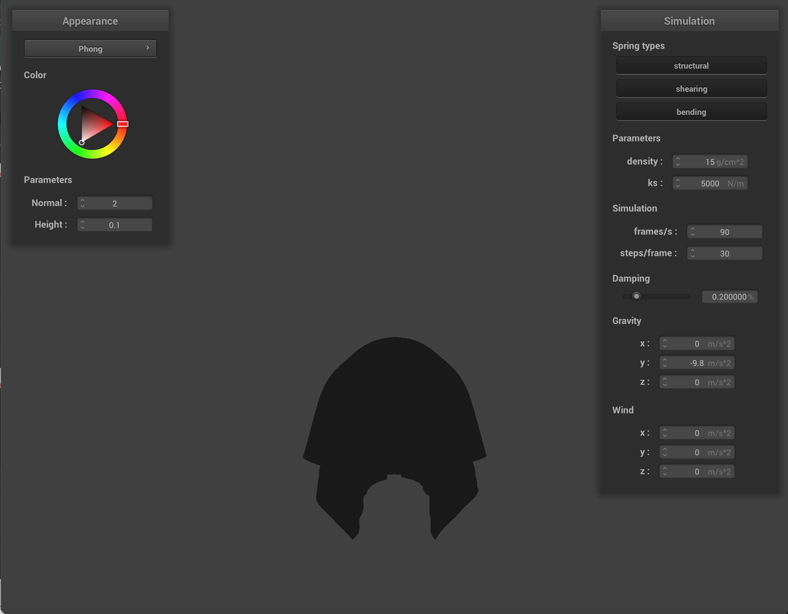

Overview
In this project, we developed a real-time three-dimensional cloth simulation utilizing mathematical operations on masses and springs to represent the physical interactions applied via self/external collisions. We modeled the cloth as a collection of point mass objects and springs, which we then could apply structural, shearing, and bending constraints upon to simulate the behavior of the cloth. Subsequently, we applied numerical integration to determine the movement of point masses across time, handled collision mechanics with both the cloth itself and external objects, and finally applied a shader program to visualize lighting/shadows within the cloth object. Through creating this program, we learned a great deal about the fundamental physics behind cloth behavior and observe how altering the strength of forces acting upon the cloth, as well as its own composition/density could impact it.
Part I: Masses and springs
For this part of the project, we initialized our representation of the cloth as a uniformly spaced two-dimensional grid/mesh of point masses connected via springs (which reflect the forces acting upon the cloth). The point masses serve to model discrete 'points' along the cloth that can be individually displaced as the result of stretching, collision, and compression interactions. Additionally, each of the point masses hold an optional 'pinned' parameter, which can be enabled to prevent them from moving and thus hold the cloth from going into freefall. For a horizontal layout we set each y value to 1, and for a vertical layout we set each z value to 1 + random(-0.001, 0.001) in order to introduce some imperfectness in the initial attributes of the cloth, making it more realistic.
Each of the springs served to model each of the aforementioned structural, shearing, or bending constraints implemented in the following manner:
- Structural: Connect each horizontally and vertically-adjacent mass points.
- Shearing: Connects diagonally-adjacent mass points.
- Bending: Connects each mass point horizontally and vertically two spaces away.
We can visualize each of these spring constraints within the wireframe in the following images:
|
Fig 1a) Only Structural and Bending Constraints
|
Fig 1b) Only Shearing Constraints
|
Part II: Simulation via Numerical Integration
In this part, we attempted to integrate the physical equations of motion via the springs to simulate the forces acting upon/between point-masses of the cloth.
In order to implement these forces, we conducted three procedures:
- Foremost, we determined the total external force being applied onto each point mass by getting the sum of the acceleration values multiplied by the mass — thus essentially summing over force, given Newton's second law — and then setting each point-mass' forces to this summed total. Afterwards, we applied the spring correction forces via Hooke's law if the constraint type was enabled, and then modified (by adding/subtracting the force of the constraint from) the forces of the corresponding point-masses accordingly.
- Next, we utilized the process of Verlet Integration (an explicit integrator) to compute the change in positions for each point mass. The process effectively utilizes the displacement of the position over a timestep `dt` since the last time `t` as an approximation of the velocity over said timestep `dt`. After additionally including a damping term to simulate the loss of energy caused by forces like fricton or heat loss (allowing the cloth to eventually come to a rest, aka its steady state following the application of a force), we obtain the updated position of each point mass.
- Lastly, we attempt to constrain the springs between each point mass to prevent unreasonable deformations across timesteps. This was implemented by iterating over all springs and checking whether they exceeded 110% of their rest_length — modifying the positions respectively if so (with edge cases like one pinned point-mass being addressed accordingly).
For each of the following segments, we altered various parameters to observe the change in behavior within the cloth's physical qualities/interactions.
Spring Constant:
In varying the assigned value of spring constant (ks), we observe a change in the 'rigidity' of the cloth's material. By decreasing ks to 50 N/m (newtons per meter) in Figure 2a, we see that the dip of the hanging cloth is stretching lower as a result of the cloth's increased flexibilty, which allows it to deform more easily. Alternatively, increasing the ks to 50000 N/m (as in Figure 2c), we see that the cloth's dip stretches/bends signficantly less than the default — reflecting the material's resistance to deforming and thus its increased 'rigidity'.
|
Fig 2a) Pinned2, ks=50 N/m (Low)
|
Fig 2b) Pinned2, ks=5000 N/m (Default)
|
Fig 2c) Pinned2, ks=50000 N/m (High)
|
Density:
In varying the density value of the cloth, we can observe a shift in the mass distribution of the cloth that can result in increased stiffness similar to changing the spring constant. For instance, decreasing the density of the cloth to 1 g/cm^2 (as seen in Figure 2d) results in the cloth's dip being less pronounced/defined as there's less mass per unit of volume (meaning that the cloth has 'less' mass in the dip region and isn't weighed down as much). Alternatively, increasing the density of the cloth to 500 g/cm^2 shows the cloth's dip going much lower due to the cloth has much more mass per unit volume, thus weighing it down more.
|
Fig 2d) Pinned2, Density=1 g/cm^2 (Low)
|
Fig 2e) Pinned2, Density=15 g/cm^2 (Default)
|
Fig 2f) Pinned2, Density=500 g/cm^2 (High)
|
Damping:
In varying the damping constant, we alter the speed at which the cloth simulation reaches its steady state, aka the point at which the falling cloth 'rests'. While the final result of non-zero damping constants is the same (eventually coming to rest), a zero-value damping constant causes the cloth to continuously oscillate back and forth for a long-time, but never reach a true 'rest' state (small imperfections along its surface). Alternatively higher-value damping times caused the cloth to fall 'slower' and reach its rest state much more quickly, with a damping value of 1.0% almost immeadiately reaching steady state.
|
Fig 2g) Pinned2, Damping=0% (Low)
|
 Fig 2h) Pinned2, Damping=0.20% (Default)
Fig 2h) Pinned2, Damping=0.20% (Default)
|
Fig 2i) Pinned2, Damping=0.80% (High)
|
Additionally, we can visualize the result of implementing these physical processes on a cloth simulation with the corners being pinned (where the center should dip down):
 Fig 2j) Simulation of Cloth Pinned at Four Corners
Fig 2j) Simulation of Cloth Pinned at Four Corners
|
Part III: Handling Collisions with Other Objects
For this part of the project, we integrated functionalities to enable collisions between the cloth and external planar/spherical objects. In order to implement collision detection with spheres vs planes, we
essentially followed the same strategy of determining whether the point-mass intersects the object of interest, and if so, finding the tangent point (upon which the point-mass intersects the object), which we can further utilize to get the correction vector to get from the point-mass' last position to the tangent. Scaling this correction vector by the friction value and summing with the last position of the point mass' last position, we obtain the new position the cloth's point mass would be — essentially displacing the cloth around the object instead of going through it.
For spherical objects, intersection is determined by computing the distance from the position of the point pass to the position of the origin (subtracting the points returns a vector, of which we get the length). If this distance was less than the radius of the sphere — meaning it intersects the sphere. For planar objects, we can multiply the dot product of the plane's normal and x (the vector going from the point-mass' last position and point on the plane) with the dot product of the plane's normal and y (the vector going from the point-mass' current position and point on the plane). If the product is less than 0, then the point-mass must have intersected the plane (as the positions cross over the plane, given only a positive and negative can multiply to negative).
In the images below, we can see the simulated cloth resting on a sphere with varying spring constant values. We observe that for smaller spring constants like 500 N/m as seen in Figure 3a, the cloth's 'softness' (aka low stiffness) allows for finer folds within the material and thus causes a tighter wrap around the sphere compared to 5000 N/m — the point masses aren't as affected by the springs. Meanwhile, larger spring constants like that in Figure 3c (~50000 N/m) cause the cloth to be more 'rigid', as the springs of the cloth resist deformation around the sphere.
|
Fig 3a) Sphere Collision, ks=500 N/m
|
Fig 3b) Sphere Collision, ks=5000 N/m
|
Fig 3c) Sphere Collision, ks=50000 N/m
|
Additionally, we can observe a simulation of the cloth lying at rest on a plane:
 Fig 3a) Plane Collision, ks=500 N/m
Fig 3a) Plane Collision, ks=500 N/m
|
Part IV: Handling Self-Collisions
In this part, we implemented the handling of self-collisions within the cloth, aka scenarios when the cloth falls/folds upon itself appropriately without clipping through or falling into the void. In order to facilitate this, we constructed a spatial hashmap of all the point-masses within the cloth (essentially maps a list of point-masses to the local volume box they're contained by, denoted by a unique float). The hash utilized for this mapping can be described as taking the 3D space and partioning it into 3D boxes of dimensions w * h * t, where w = 3 * width / num_width_points, h = 3 * height / num_height_points, and t = max(w, h).
To check for a self-collision, we essentially iterated over each individual point-mass in the cloth and checked the spatial map to check for possible candidates for collision. Iterating through these candidates (skipping over the point itself), we check the distance between the original point-mass and given candidate is within 2 * thickness and if so, compute the correction vector to constrain them to 2 * thickness apart. Lastly, we average these correction vectors and scale down by simulation_steps, returning the resultant correction vector for a self-collision.
In figures 4a-c below, we can observe how the progression of the fallen cloth serves to collide with itself:
|
Fig 4a) Self-Colliion Early
|
Fig 4b) Self-Collision Fallen
|
Fig 4c) Self-Collision Restful State
|
Additionally, we observed the effect of varying the density and spring constants of the cloth when having self-collision mechanics.
By varying the density parameter, we observe that there appears to be a shift in the 'spread' and number of folds seen within the cloth at rest. For instance, when looking at a low density simulation like in figure 4d, we observe that the cloth's folds to appear less 'compact' (more rounded and space). We presumed this to be the effect of the cloth's light mass allowing the spring constant to create more defined folds. Meanwhile, for higher densities like that seen in figure 4f (~30 g/cm^2), we can observe there are much tighter folds and less spread, which we can attribute to the mass of the cloth weighing it down significantly more over each unit volume — almost making the folds push down on one anohter due to the effects of gravity. These variations can be visualized in the figures below:
|
Fig 4d) Self-Collision, Density=5 g/cm^2
|
Fig 4e) Self-Collision, Density=15 g/cm^2
|
Fig 4f) Self-Collision, Density=30 g/cm^2
|
Through varying the value of the spring constant, we can see a strong difference in the number of 'wrinkles' within the cloth simulation. For simulations with lower ks-values, like that seen in Figure 4g (~3000 N/m), we observe there to be way more fine-wrinkles and folds within the cloth material compared to the default 5000 N/m. The reason for this is because the low spring constant essentially decreases the rigidity within the material and thus enables for more granular folding/wrinkling in the cloth. Meanwhile, more rigid cloths attributed to larger ks-values (like Figure 4i) tend to have way fewer folds, largely as the higher spring constant causes greater resistance to deformation. These variations can be visualized in the figures below:
|
Fig 4g) Self-Collision, ks=3000 N/m
|
Fig 4h) Self-Collision, ks=5000 N/m
|
Fig 4i) Self-Collision, ks=50000 N/m
|
Part V: Shaders
For this part of the project, we utilized shaders to generate different types of materials for our mesh.
In short, a shader can be described as a program utilized to generate/manipulate the appearance of objects (via color, texture, lighting, and shading) during the prcocess of rendering a scene, and occur on the graphics processing unit of a computer. Shader programs additionally serve to function as a chunk of computation being ran on many separate GPU threads at once, thus allowing for speedups in rendering. For example, if we had 100 pixels to represent a mesh, then the shader program will run the same code on the entire 100 pixels at once, optimized to be quick and efficient for one-way calculations.
A vertex shader is a shader that operates on the individual vertices of the 3D model's geometry before being colored in, while a fragment shader is ran on individual pixels or fragments on the geometry's primitives. In the fragment shader, each pixel or instance has uniform variables attached to represent inputs, like the normal at that pixel or its location. Using these normals, we are able to create different materials.
Blinn-Phong Shading Model:
One particular example of a shading model is the Blinn-Phong model, which serves to approximate the behavior of light reflection on surfaces as the sum of ambient (light scattered uniformly due to indirect illumination), diffuse (light scattered uniformly due to direct illumination), and specular (reflection of light off shiny/glossy objects) components. The Blinn-Phong model equation can be described as
L = kaIa + kd(I/r2) max(0, n • l) + ks(I/r2) max(0, n • h)p. In the images below, we can observe the contribution of each of the individual components and the full Blinn-Phong model render:
|

Fig 5a) Isolated Ambient Component
|
 Fig 5b) Isolated Diffuse Component
Fig 5b) Isolated Diffuse Component
|
|
Fig 5c) Isolated Specular Component
|
Fig 5d) Complete Blinn-Phong Model
|
Custom Textures:
Next, we can observe the utilization of custom textures; for our example, we utilized a cute image of a bird!
|
Fig 5e) Custom Texture - Pre-Fall
|
Fig 5f) Custom Texture - Post-Fall
|
Bump/Displacement Maps:
In order to simulate the appearance of detailing along the surfaces of an object, we utilize bump mapping or displacement mapping. While bump mapping serves to create the illusion of surface irregularities (bumps, dips, etc.) via perturbing the surface normals according to a given texture map, displacement mapping actually perturbs the geometric positions of an object's surface to create genuine surface irregularities.
For the following images, we rendered the sphere/cloth simulation using the bump and displacement maps at different degrees of 'coarseness' through changing vertical(-o)/horizontal(-a) resolutions (particularly 16x16 and 128*128 resolutions) for the texture_3. For the lower sampling rate (16x16 res), we observe a much 'smoother' visible appearance in the bump mapping compared to the displacement — with the latter being a more imperfect sphere, likely due to low sampling for depth interpolations causing rendering artifacts. Meanwhile, for the higher sampling rate (128x128 res), both the bump and displacement mappings appear to properly depict the shading of the texture — which is because the sample rate allows for the complexity of the texture map to be seen for the displacement.
|
Fig 5g) Sphere Bump Mapping (16x16)
|
Fig 5h) Sphere Displacement Mapping (16x16)
|
|
Fig 5i) Sphere Bump Mapping (128x128)
|
Fig 5j) Sphere Displacement Mapping (128x128)
|
Mirror:
Additionally, we can visualize the mirror render for the cloth and sphere in the following figures:
|
Fig 5k) Mirror - Cloth and Sphere
|
Fig 5l) Mirror - Fallen Cloth on Sphere
|
Lastly, we also made a custom shader for extra credit. This shader was created via shadertoy first, then brought over into our program. This shader uses various techniques, such as perlin noise, rotation matrices, scaling matrices to manipulate base shader shapes, such as repeating rings and grids (both using fract/modulo functions to repeat). Lastly, to make the shader more colorful, the R, G, and B values are split and distorted with scale. It has also been animated by creating a custom uniform float that tracks the time since the start of the program. Here is what it looks like:
|
Fig 5m) Custom - Cloth and Sphere
|
Fig 5n) Custom - Fallen Cloth on Sphere
|
Part VI: Extra Credit
1. Custom Shader
The custom shader extra credit has been explained in Part V: Shaders; please see that portion for implementation. Here are some extra screenshots, of the texture at different time steps.
|
Fig 6a) Custom animated shader at one time frame
|
Fig 6b) Custom animated shader at another time frame
|
2. Wind
We also added wind physics into our cloth simulation.
Based on this research paper, we used the equation F = c*dot(n, d)*n applied to every triangle surface, where c=wind strength, d=wind direction, and n=normal of the face.
This calculation applies the force after the rest of the force (from springs and gravity) are calculated.
Furthermore, we also created a user interface component to allow modification of the wind direction and strength. With this, we get a pretty realistic waving flag.
|
Fig 6c) Wind at 2m/s in the x axis in a flag-like scene
|
Fig 6d) Wind at 0.3m/s in the x axis in the sphere scene
|
3. Draggable Cloth
The last extra credit we made was the ability to move around the cloth. This part was the most difficult portion, as we had to convert between screen cordinates and world coordinates. In order to do this, we created 3 different functions:
- project_point(): viewport_size * projection_matrix * view_matrix * point
This projects a 3D world coordinate onto the viewing plane by applying the camera view matrix (the coordinate is now in camera space), then the camera projection matrix (the coordinate is now in screen space), and finally fixing to screensize (the coordinate is scaled with the screen dimensions).
- project_point_get_depth(): get_z(view_matrix * point)
This function gets the depth of a 3D point. This is used later when unprojecting.
- unproject_point(): inverse_view_matrix * depth * inverse_projection_matrix * point
This function does the opposite of project_point() using inverse matrices. It converts a 2D screen coordinate and a depth value and returns a 3D world coordinate.
Lastly, used these functions by iterating through all points on screen to find the closest point to the mouse, and allowing the user to drag this point around the screen. While being dragged, the point mass is pinned, and its position linearly lerps to the new mouse position to make this movement smooth between the many physics iterations that happen in one frame.
|
Fig 6e) Cloth with 4 corners pinned, and using the UI to drag the center point upwards
|
Fig 6f) Textured cloth being held up from one corner
|